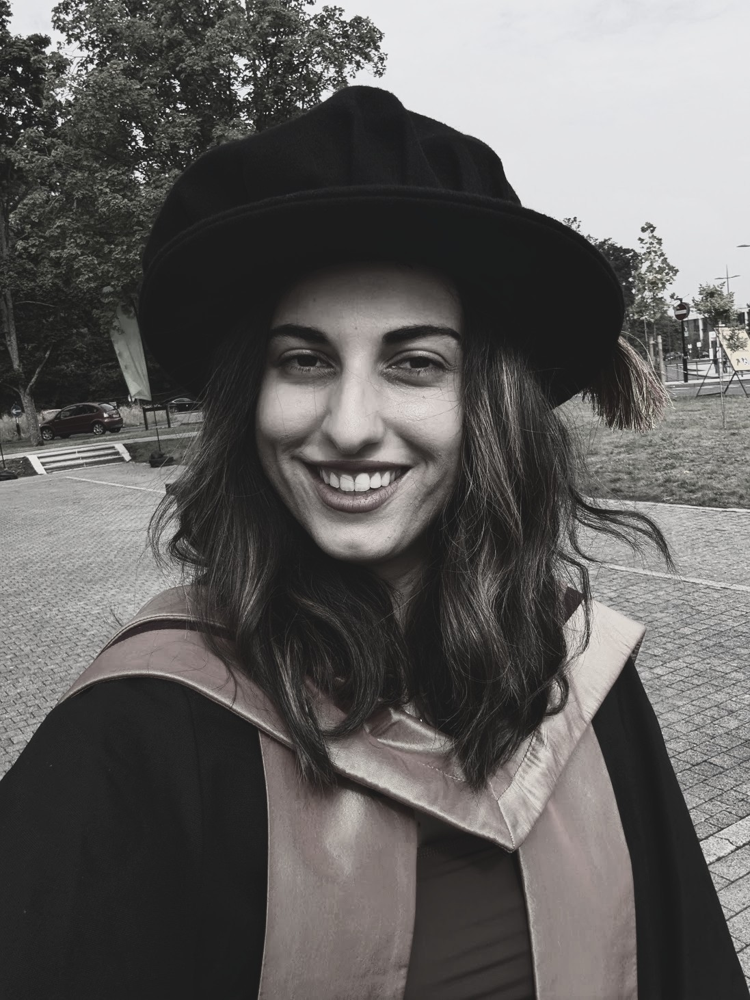

The project addresses a major gap in research on time use in Cyprus. While time-use data are widely used internationally to understand gender inequality, work, care and wellbeing, Cyprus has not previously had nationally representative time diary data of this kind.
MUMTIME will use an adapted open-access digital time diary tool to collect detailed information about how mothers spend a 24-hour day, including paid work, childcare, domestic work, leisure and other activities.
Time diaries allow researchers to move beyond broad questions about how much time people say they spend on activities and examine how activities are actually organised throughout the day.
By examining how work, care and leisure intersect, MUMTIME investigates how time is distributed and experienced differently across mothers' everyday lives.
The project brings together quantitative time-use research and qualitative accounts of mothers' experiences.
MUMTIME will collect detailed 24-hour time diaries using an adapted version of the Extended Light Digital Diary Instrument (o-ELiDDI). Participants record their activities across the day, allowing researchers to capture both primary and secondary activities, location, co-presence, ICT use and enjoyment.
Time-use research is not only about measuring minutes. MUMTIME also considers how activities are experienced and how mothers negotiate competing demands in everyday life.
The project combines nationally representative time-use data with qualitative interviews to connect patterns in everyday activity with mothers' own accounts of their experiences.
Updates from the MUMTIME project, including research, events, publications and project milestones.
The MUMTIME Marie Skłodowska-Curie Postdoctoral Fellowship project begins at the University of Cyprus.
Updates on data collection, events, publications and other project activities will appear here.
Elena completed an ESRC 1+3 fully funded doctoral studentship at the University of Warwick, including an integrated Master's in Social Science Research Methods and a PhD in Sociology.
Following her doctorate, she was awarded a one-year, part-time postdoctoral fellowship at the Institute of Advanced Study, University of Warwick. Alongside this, she continued working as a Research Fellow at the Centre for Time Use Research at UCL.
Her research combines methodological development with substantive questions in sociology and public health, with a particular focus on time-use research and diary data.
Selected peer-reviewed articles, research outputs and methodological resources.
Teaching, research methods and widening access to research have been an important part of my academic work.
More than five years of university-level teaching experience, including small-group teaching, module leadership, assessment, dissertation supervision, marking and student mentoring.
Teaching experience across Sociology of Health, Quantitative Sociology, Research Methods and Research Design.
Through the UK Brilliant Club, I delivered six research-based classes to high-school students in early 2025.
I independently designed and delivered an introductory time-use research training workshop for academics and policymakers.
I welcome conversations about MUMTIME, research collaboration, methodology, time-use research, teaching and interdisciplinary projects.
mylona.elena@ucy.ac.cy